Documentazione Ufficiale LotoCalendario & Architettura Software
Sviluppato da MikTattico in Java nativo e XML per Android
1. Note dell'Autore & Percorso di Sviluppo
Benvenuti. LotoCalendario nasce da un percorso di riavvicinamento al mondo della programmazione dopo oltre 19 anni di pausa. Ritrovata la forte passione per la programmazione 6 anni fà, e partendo da un solido bagaglio in Pascal/Delphi e un po di esperienza in Visual Basic e linguaggio C imparato 25/26 anni fa, ho intrapreso lo studio dell'ambiente Android nativo tramite l'IDE Apache NetBeans e Java Swing.
Nato inizialmente per la necessità di realizzare un software concreto e fruibile, LotoCalendario si è rivelato una sfida ingegneristica complessa: governare il tempo, le scadenze, i cicli temporali e gli eventi di sistema di Android ha richiesto una progettazione accurata. L'applicazione non fa uso di soluzioni generiche, ma integra componenti d'interfaccia proprietari e personalizzati ideati per garantire massima reattività e semplicità d'uso.
2. Gestione Avanzata della Memoria Heap & Sicurezza Interna
A livello architetturale, LotoCalendario integra un sistema di gestione della memoria proprietario distribuito nei pacchetti interni (libs/bandcore, libs/bandglyph, libs/bandrealloc, libs/lithogliph).
Per superare i limiti di volatilità delle tradizionali istanze String di Java e non dipendere esclusivamente dalle tempistiche imprevedibili del Garbage Collector, il core dell'applicazione opera direttamente su array dinamici di tipo char[]. Questo approccio consente:
- Controllo diretto ed immediato sul ciclo di vita dei dati testuali in memoria Heap.
- Azzeramento istantaneo delle informazioni sensibili senza attendere la deallocazione automatica.
- Elevato livello di protezione e stabilità contro le interferenze del sistema operativo.
3. Roadmap Tecnologica: Evoluzione Yue_Dai & Criptaggio Incarichi
La versione attualmente integrata in LotoCalendario costituisce il nucleo stabile originario della libreria. Durante il continuo processo di ingegnerizzazione, è stata completata l'evoluzione di questo sistema, denominata Yue_Dai (moduli yue_dai/bandglyph/Band e yue_dai/bandmalloc/BandHub).
La nuova architettura introduce il concetto di BandHub, un deposito strutturato su 3 aree di memoria Heap distinte (MemoryRoot, MemorySilo e MemoryMatrix) ed estende le funzionalità di sicurezza dell'applicazione:
- Criptaggio Nativo degli Incarichi: Con l'integrazione della nuova libreria, tutti gli incarichi e gli appuntamenti memorizzati nella directory privata dell'applicazione verranno automaticamente cifrati.
- Esportazione Sicura Esterne:La funzione di salvataggio esterno traminte file manager, e' gia pienamente operativa; con l'arrivo del nuovo package yur_day, verrà sbloccato il dialog di opzione che conmsentirà all'utente, di scegliere se esportare i dati all'esterno in chiaro oppure in formato cifrato.
Nota di sviluppo: L'integrazione del nuovo framework Yue_Dai e del sistema di cifratura avanzato è già pianificata e verrà rilasciata nei prossimi aggiornamenti di LotoCalendario.
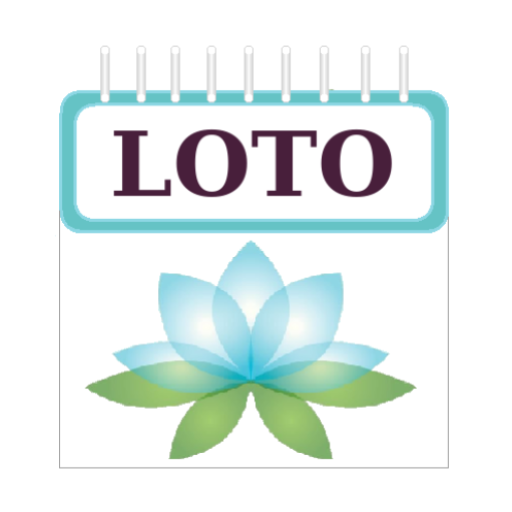
(Guida - Parte 1)
Questo é il primo avvio di Loto Calendario e serve ad inizializzare il caricamento del registro delle impostazioni,
e a caricare gli incarichi appuntamenti esistenti nella prossima interfaccia, nei giorni del mese attuale.
Premendo il pulsante Start LotoCalendario, si avvierà questa procedura iniziale di pre caricamento.
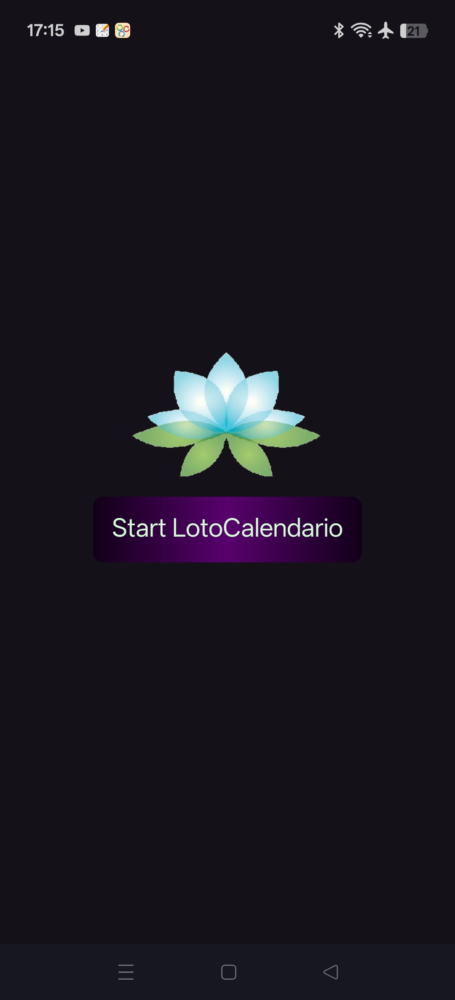
(Guida - Parte 2)
Interfaccia Loto Calendario:
Da notare che il calendario presenta le icone dei giorni di due tipi.
Il primo tipo e' rotondo e il secondo tipo e' a goccia. Le icone rotonde, saltano
all'occhio immediamente e rapresentano uno o piu giorni, senza incarichi e senza
appuntamenti. Anche le icone a goccia, risaltano subito e
rapresentano i giorni del mese dove e' presente un evento registrato.
Sulla punta della icona a goccia del giorno del mese, e' presente un numero il quale
indica esattamente la quantità di appuntamenti creati per quel giorno specifico del mese.
Indicatore del giorno della settimana: In cima al centro di ogni icona è presente
una lettera che indica il giorno della settimana. La lettera è posizionata su una griglia
astratta da 9 creata appositamente da me (per ora non selezionabile dall'utente).
Con i prossimi aggiornamenti, aggiungerò un'opzione nel menu impostazioni per consentire
di personalizzare e scegliere la posizione desiderata dove far apparire la lettera del giorno.
Legenda dei giorni:
L = Lunedì
M = Martedì
M = Mercoledì
G = Giovedì
V = Venerdì
S = Sabato
D = Domenica
Per ora, di default, il giorno della settimana, e' impostato sulla posizione 2 della
griglia da 9, ossia in alto al centro.
Con i prossimi aggiornamenti svilupperò inoltre nuove icone dalle forme diverse e particolari.
ToolBar superiore:
La barra degli strumenti situata sopra il calendario serve a navigare e cambiare il mese e l'anno.
Per maggiori dettagli su questa funzione, cliccate sul tasto verticale a sinistra "Guide...":
si aprirà il menu dal quale poter selezionare la guida appropriata
relativa alla ToolBar del calendario.
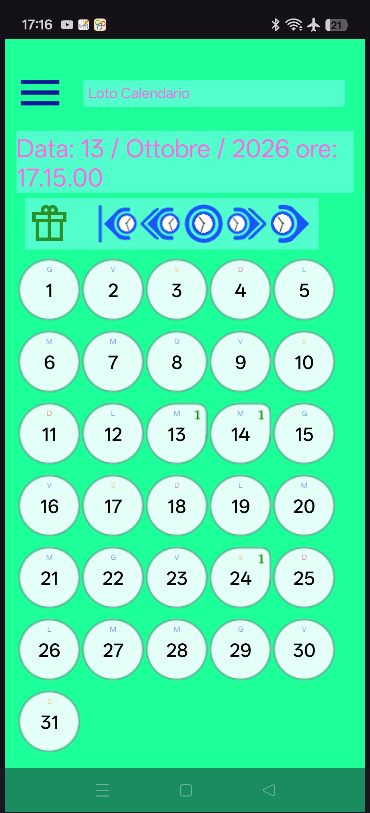
(Guida - Parte 3)
Gestione Incarichi e Apertura Rapida:
Vista Oraria e Navigazione Rapida:
Selezionando un giorno dal calendario si accede direttamente alla vista oraria della giornata.
La schermata mostra la sequenza degli orari suddivisi in intervalli da 15 minuti, permettendo
sia di creare nuovi appuntamenti sia di consultare quelli già esistenti.
Progettata per l'uso in mobilità (Pulsanti di Scorrimento Rapido):
Questa interfaccia d'apertura rapida è stata concepita pensando anche a chi lavora in mobilità,
come autisti e camionisti indisciplinati, dove la velocità e la semplicità d'uso sono fondamentali.
Per evitare inutili distrazioni e senza dover scorrere manualmente lunghi elenchi con le dita, in
alto e in basso sono presenti le frecce verdi di navigazione rapida. Con un paio di tocchi
si salta istantaneamente da un incarico all'altro del giorno selezionato.
Il tasto rosso in alto al centro serve ad aprire il dialog "Eliminazione Incarico".
Per maggiori dettagli su questa funzione, cliccate sul tasto verticale a sinistra "Guide...":
si aprirà il menu dal quale poter selezionare la guida appropriata
relativa alla tasto rosso di eliminazione incarichi.
Accesso Diretto alle Cartelle Nascoste:
Il sistema si collega direttamente e in background alla directory interna riservata dell'applicazione
dove sono salvati gli incarichi. Non serve aprire file manager esterni o navigare tra le cartelle
dello smartphone: la creazione e l'apertura avvengono immediatamente nello stesso punto.
Pulsante di Uscita: Il tasto con la croce blu posizionato in basso consente di chiudere la
schermata oraria e ritornare subito al calendario principale.
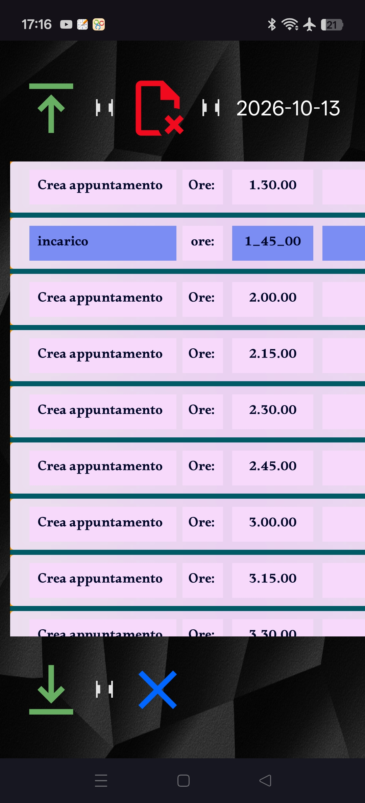
(Guida - Parte 4)
Gestione Eliminazione Incarichi:
Procedura di Eliminazione Incarichi:
All'interno del dialogo viene mostrato in modo chiaro il nome del file dell'incarico selezionato
(con la data e l'orario specifico ad esempio: incarico_2026_10_14_ore_8_30_00), garantendo la
massima precisione per evitare cancellazioni errate.
Pulsanti di Conferma e Annullamento:
Icona Verde (in basso a destra): Conferma ed elimina definitivamente l'incarico dal
sistema e dalla memoria interna.
Icona Blu (in alto a destra) / Tasto di chiusura: Annulla l'operazione senza apportare
modifiche e consente di ritornare in tutta sicurezza alla schermata precedente.
Prima di confermare l'eliminazione di un incarico, va selezionato.
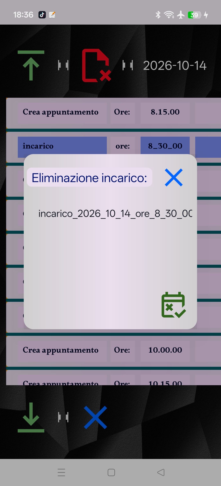
(Guida - Parte 5)
Guida all'uso di Loto Editor Calendario.
Questo é Loto Editor Calendario ed é l'appuntamento incarico aperto.
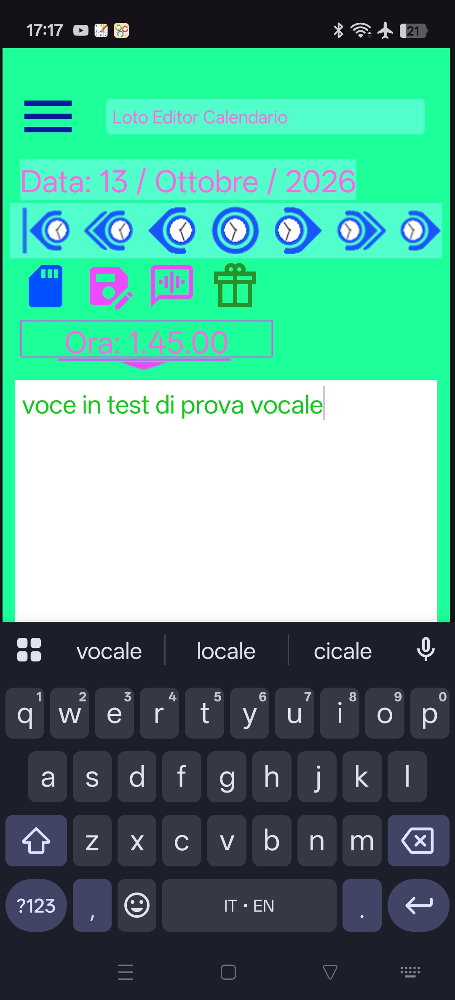
Attenzione:
La cosa piu importante da sapere é che quando si apre un'incarico gia esistente,
l'incarico esistente e' gia salvato. Quando invece si e' appena creato un nuovo incarico
dal calendario, l'incarico non e' salvato automaticamente. Ogni carattere inserito qui,
non viene salvato automaticamente. E' importante ricordarsi di salvare l'incarico,
o dal menu in alto a sinistra se si intende salvarlo all'esterno della applicazione,
oppure dal tasto di salvataggio interno:
E' importante ricordarsi di premere questo tasto per salvare ogni modifica a questo incarico,
perche il sistema di salvataggio interno, non ha bisogno di un nome scelto dall'utente. Il
nome viene creato automaticamente ricostruendo un nome standardizzato e assemblato con le
informazioni: anno, mese, giorno, ora, minuti. Quindi per salvare serve solo, l'intenzione
dell'utente di salvare internamente l'incarico premendo il tasto mostrato poco fa.
Attenzione:
La seconda cosa importante da sapere e' la funzione di questo tasto:
Questo tasto, serve a salvare gli incarichi all'esterno immediatamente, senza passare per il
file manager salva con nome. Ma perche funzioni, l'incarico deve essere o già aperto dall'
esterno, oppure deve essere stato appena salvato all'esterrno altrimenti questo tasto rimane
inattivo. In sostanza con un'incarico esterno gia creato e salvato, non viene avviato il file manager
salva con nome da questo tasto. E' neccessario utilizzare il "menu/Salva Appuntamento..." in alto,
a sinistra, e questo tasto allora si attiverà e ad ogni suo uso, un dialog ti chiedera solamente
una conferma di salvataggio delle modifiche.
Ultima cosa da sapere, e' che quando si ha un'incarico aperto dall'esterno, o appena creato
all'esterno, il tasto di salvataggio precedente ossia quello che salva l'incarico all'interno
della directory di installazione di Loto Calendario, e' disabilitato. Per riabilitarlo, e'
necessario avere un incarico interno aperto.
Quindi e' importantissimo distinguere la differenza tra i due sistemi di salvataggio:
1- Incarico aperto interno aperto, salvataggio interno rapido attivo:
Salvataggio esterno inattivo:
2- Incarico aperto esterrno aperto, salvataggio esterno rapido attivo:
Salvataggio interno inattivo:
In caso che ci si trovi con un'incarico esterno aperto, e si desidera tornare agli incarichi interni,
hai due modi veloci per farlo. Il primo e' andare nel menu in alto a sinistra, e selezionare Home
Loto Calendario ed aprire o creare un nuovo incarico da lì. Il secondo piu rapido e' cliccare il tasto
centrale nella toolBar, che e' il tasto che conduce al giorno odierno:
(Guida - Parte 6)
Guida all'uso del viva voce Parte 1
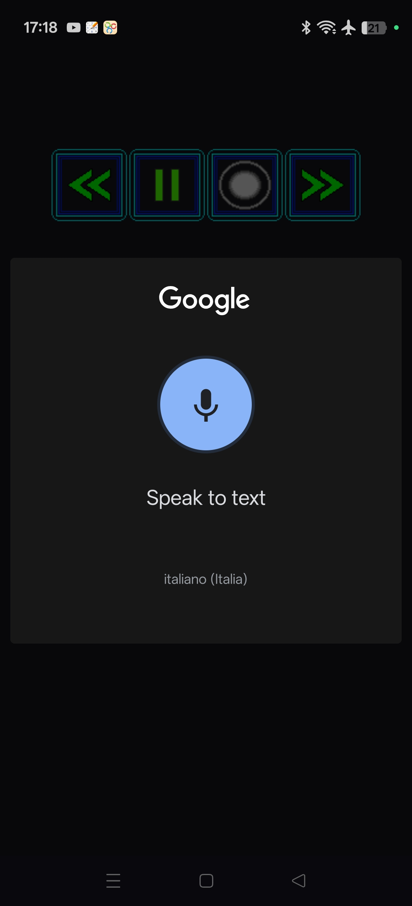
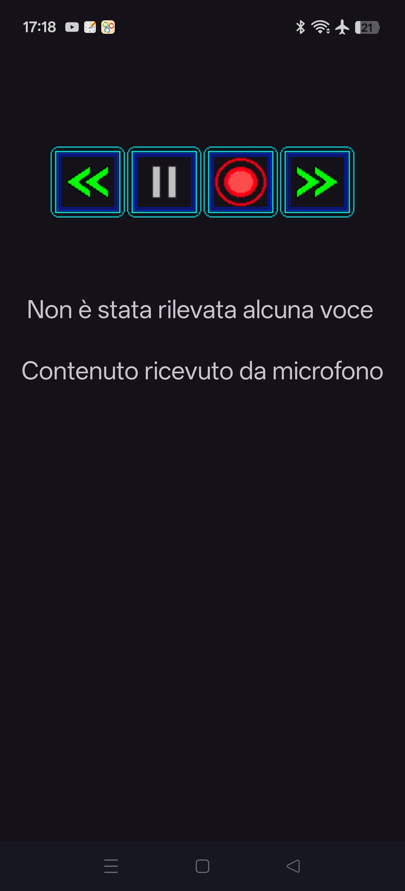
Se il viva voce di Google smette di funzionare, oppure qualcosa va storto, con la toolbar qui sotto
premendo questo tasto:
il vivavoce si riavvia senza dover tornare a Loto Editor Calendario
per ripremere tasto di nuovo questo tasto:
Le frecce a sinistra, servono per tornare a Loto Editor Calendario.
Le frecce a destra, servono a proseguire con il salvataggio del contenuto nell'appuntamento
che stai costruendo.
(Guida - Parte 7)
Guida all'uso del viva voce, parte 2.
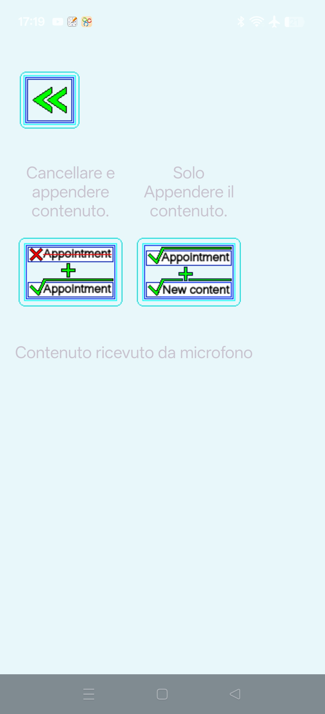
Qui si hanno 3 scelte:
1- Tornare indietro per aggiungere o modificare il contenuto:
2- Scegliere di sovrascrivere il contuno precedente sostituendolo con questo nuovo contenuto:
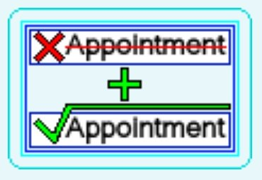
3- Scegliere di appendere dopo il contuno precedente questo nuovo contenuto:
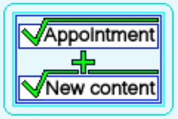
(Guida - Parte 8)
Guida alla gestione del giorno aperto in Loto Editor Calendario.
Premendo questa casella che rapresenta l'ora di questo giorno selezionato,
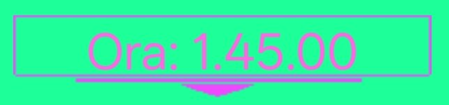
si apre la finestra di gestione apertura o creazione incarico gemella a quella
precedente in Guida - Parte 3.
Anche da qui e' possibile cambiare apuntamento, oppure crearne di nuovi.
Per riesaminare la Guida - Parte 3 piu dettagliata, puoi cliccare il bottone sulla colonna a
sinistra, verticale con la scritta: "Guide... ".
Il dialog che si aprira, ti consentira di selezionare e saltare alla perte 3 di questa guida.
(Guida - Parte 9)
Guida all'uso delle ToolBar
La ToolBar di loto calendario, ha frecce che rapresentano un cambio
del mese selezionato oppure dell'anno.
La freccia a sinistra e destra, fa cambiare l'anno-
La freccia a sinistra e destra successiva, fa cambiare il mese.
Il pulsante al centro, fa tornare alla data anno e mese attuale.
La toolBar di Loto Editor Calendario invece possiede anche i pulsanti di
cambio del giornio cioé giorno precedente e giorno successivo.
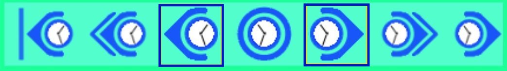
(Guida - Parte 10)
Impostazioni e personalizzazioni
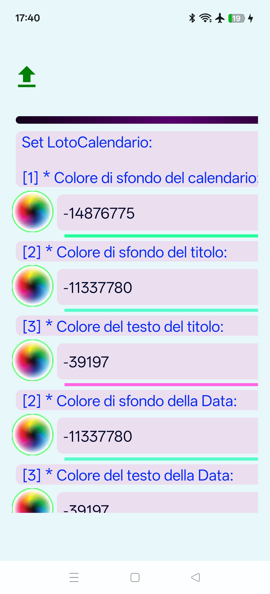
Premendo il tasto qui sotto.
Il colorpicker che si apre, e' stato creato da me e con questo, si
puo personalizzare il colore in quasi tutto il calendario e l'editor del calendario.
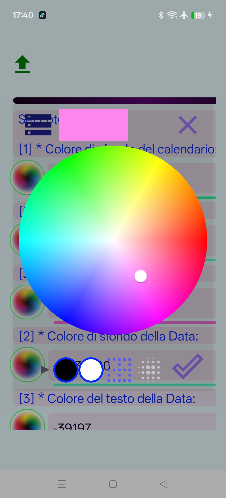
Questo componente, creato da me, però e' cresciuto grazie all'importazione di un'altro componente ossia questo:
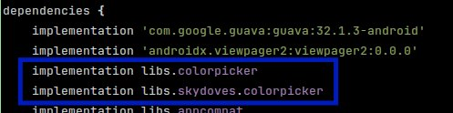
Tuttavia il colorpicker originale, mi faceva schifo, e allora ho creato il mio partendo da questo, faccendolo diventare
molto piu grazioso, con anche una ToolBar scorevole con i colori predefiniti impostati da me e selezionabili
con facilità.
Ecco la procedura per cambiare facilmente una colorazione.
prendendo come esempio la prima voce qui sotto,
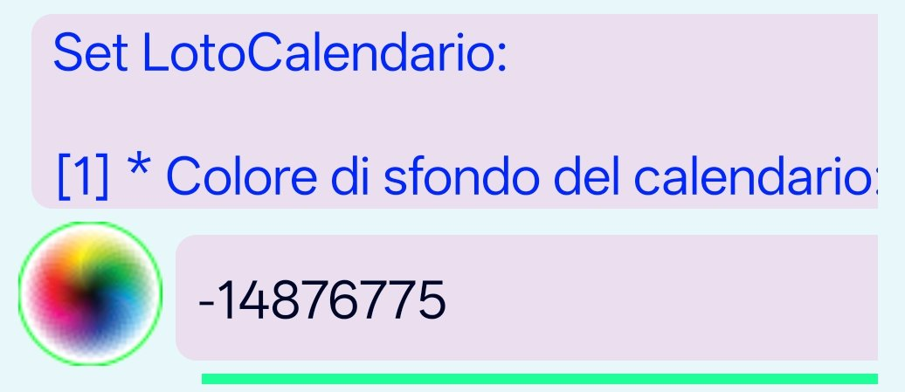
cliccando il mio colorpicker, il cerchio colorato, appare questo:
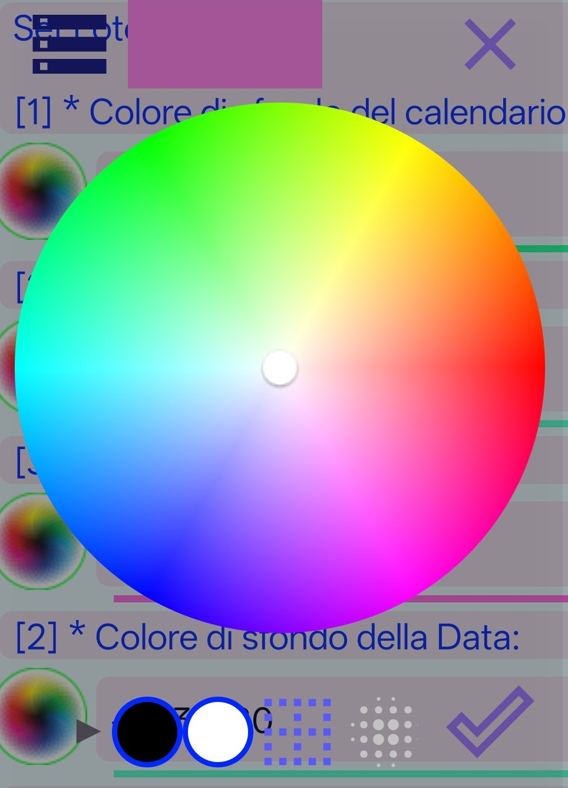
Qui si puo selezionare qualsiasi un colore, e nella toolbar qui sotto:
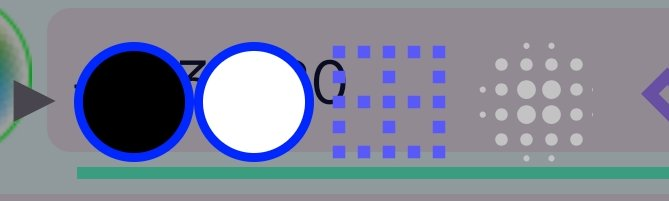
si puo selezionare un colore da una lista di colori predefiniti impostati da me.
Luminosità:
In caso la luminosita non vi agrada, in tal caso se premete il menu del mio colorpicker
in alto a sinistra.
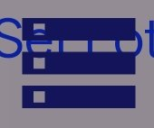
Premendo il menu, apparirà questo:
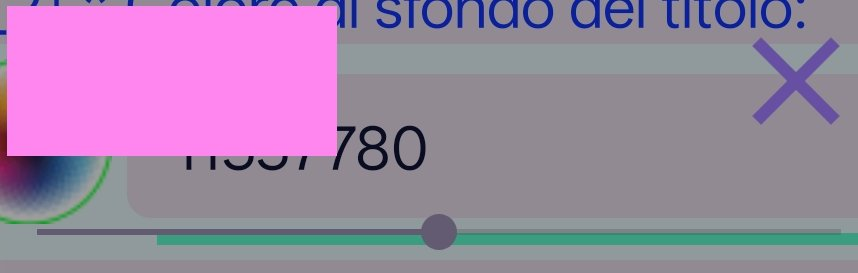
e spostando il pallino al centro a sinistra o a destra, si regola la luminosita.
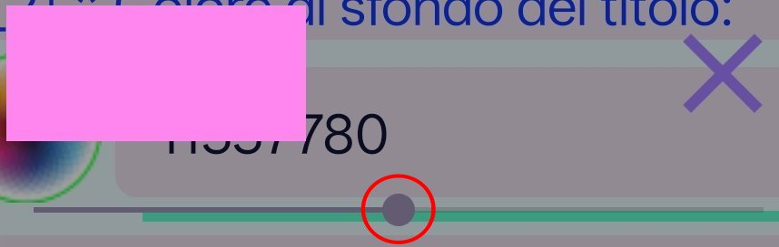
L'anteprima della luminosita e' mostrata in alto a sinistra:
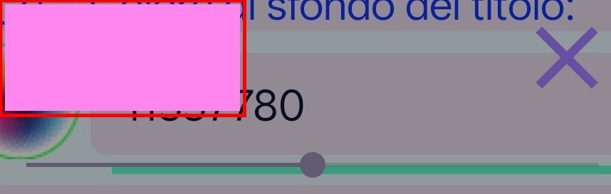
Per confermare o annullare, cliccare al centro a destra la "X" oppure la "V":
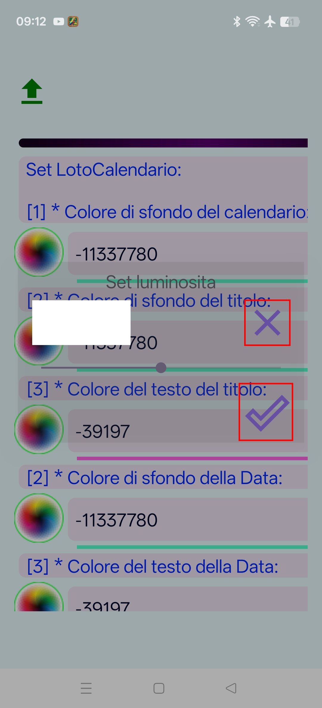
Cosi avrete solo confermato la luminosità del colore. Per cambiare effettivamente il colore
dovrete confermare il colore quando sara riapparso il coloropicker premendo la "X" oppure la "V",
Il colore cambiato nella sua luminosita, apparrirà cambiato in alto a sinistra a fianco del tasto
del menu.
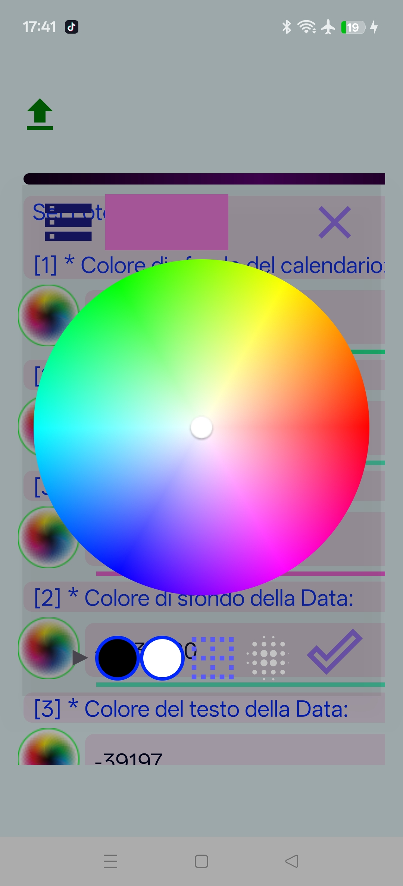
Quando avrete confermato il colore, io ho progettato un modo rapido e comodo per importare lo
stesso colore in piu parti del calendario oppure del editor del calendario con il menu
copia incolla. Se cliccate sopra la casella del numero colore:
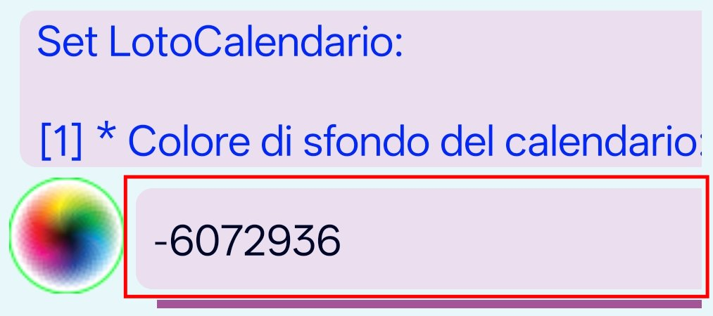
apparirà il menu copia numero colore:
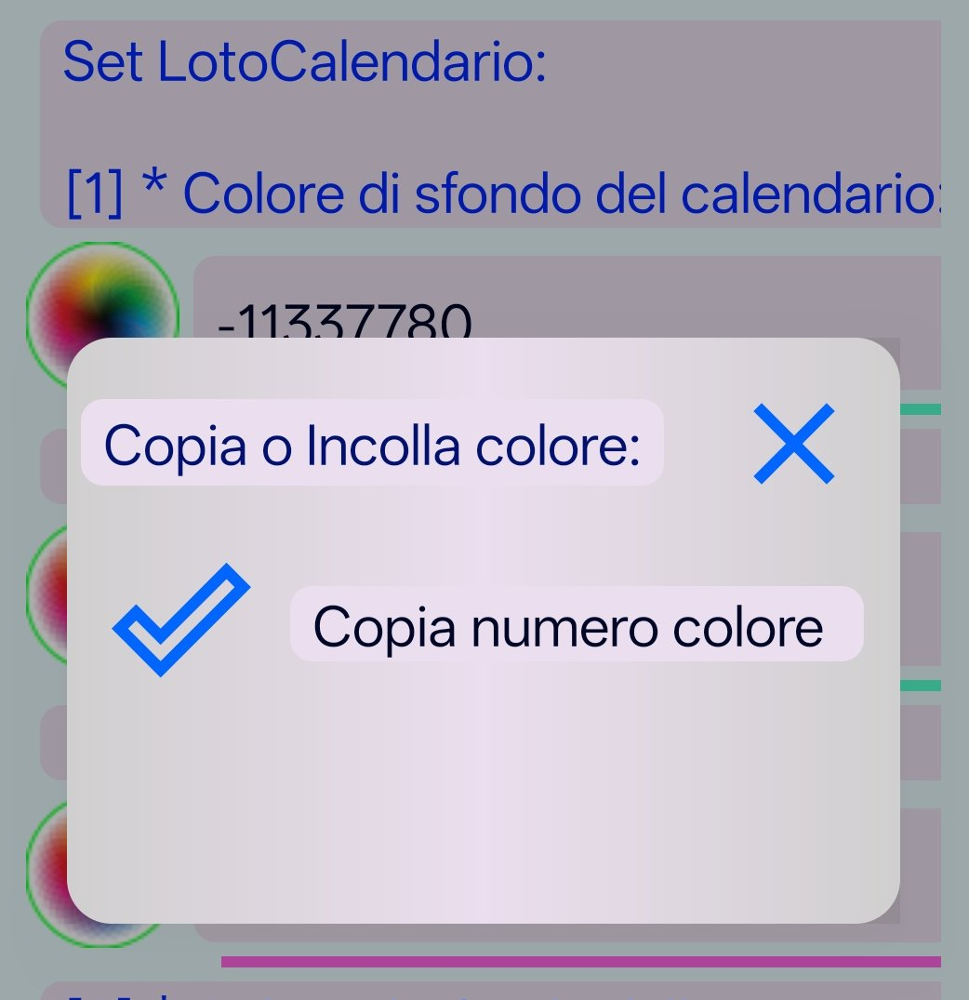
Appena avrete confermato la copia numero colore, potrete con facilità cliccare le caselle successive
dove desiderate cambiare il colore, con lo stesso copiato poco fà, e sovrascrivere il colore precedente
con il nuovo colore scavalcando tutta la procedura del colorpicker.
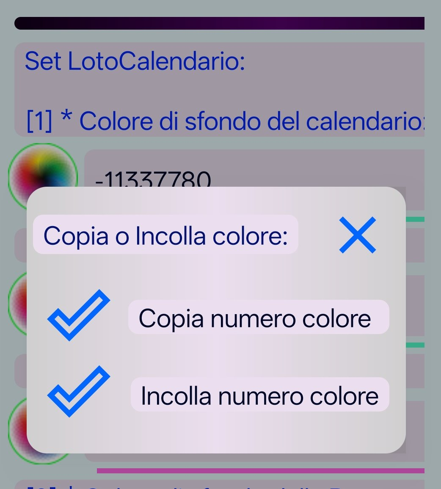
La conferma del cambio colore con il nuovo colore, la avrette sulla linea colorata sottostante alla
casella del numero colore.
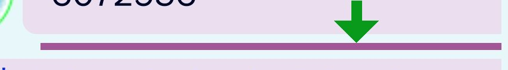
Attenzione, la impostazione: Color icone ToolBar non e' attiva!
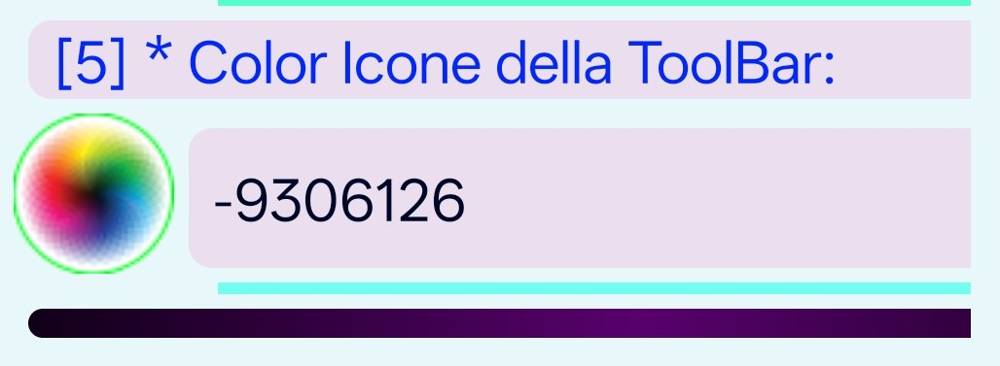
Purtroppo non ho ancora capito come alterare una colorazione di immagine,
dato che la ToolBar e' composta da tante piccole immagini caricate.
Studierò laquestione in futuro perche ora sono concentrato in un nuovo progetto e anche sui prossimi
aggiornamenti piu importanti da fare. Comunque credo che il fattore colorazione della ToolBar, la
escludero del tutto sostituendola con una galleria di tool bar diverse selezionabili in blocco da una listView.
Facendo cosi, il calendario sara esteticamente più personalizzabile rispetto a una semplice colorazione,
rendendolo piu grazioso.
(Guida - Parte 11 IN COSTRUZIONE)
Guida all'uso di Calendario Loto

(Guida - Parte 12 IN COSTRUZIONE)
Guida all'uso di Calendario Loto
(Guida - Parte 13 IN COSTRUZIONE)
Guida all'uso di Calendario Loto
(Guida - Parte 14 IN COSTRUZIONE)
Guida all'uso di Calendario Loto
(Guida - Parte 15 IN COSTRUZIONE)
Guida all'uso di Calendario Loto
(Guida - Parte 16 IN COSTRUZIONE)
Guida all'uso di Calendario Loto